Formatos aprobados y versionados
Biblioteca de formatos con código, versión, documento base en PDF aprobado por el mandante y referencia de aprobación. Cada nueva revisión convive con la anterior sin sobrescribirla.
Digitaliza los protocolos de calidad de obra: el emisor completa el formato aprobado en terreno, con fotos y sin conexión, y el documento recorre su ruta de firmas por cargo, con plazos en días hábiles, hasta cerrar con un PDF final con sello de integridad.
portal.certidesk.cl/protocolosParte de IntegralFlex Suites
Protocol Controller es el archivo digital de calidad de IntegralFlex Suites para proyectos de construcción, remediación y montaje. Reemplaza los protocolos en papel y en planillas por formatos controlados: cada formato se registra con su documento base aprobado por el mandante, su versión, sus campos y la ruta de responsables que debe firmarlo.
En terreno, el emisor prepara la copia del formato, la completa en la tablet, agrega fotografías como evidencia y la sincroniza al recuperar señal. Al emitirlo, el protocolo avanza por su secuencia de validación: responsables del contratista, jefaturas de calidad y terreno, y la inspección técnica del mandante. Cada validador lo firma con su propia cuenta o lo devuelve con observaciones.
Los plazos de cada firma se miden en días hábiles con el calendario de feriados de Chile y los feriados propios del proyecto. El dashboard muestra el cumplimiento de SLA, el tiempo medio por firma, la carga de cada validador y los protocolos por estado y formato. Cada aprobación queda en el historial y el documento cerrado se protege con un sello de integridad verificable.
Biblioteca de formatos con código, versión, documento base en PDF aprobado por el mandante y referencia de aprobación. Cada nueva revisión convive con la anterior sin sobrescribirla.
Define dónde completa el emisor cada dato del formato, por página y posición, para generar el PDF final sobre el documento original.
Ruta de firmas de cada formato con responsable de emisión y aprobaciones por cargo: supervisión, terreno, calidad, laboratorio y la inspección técnica del mandante.
Completa las copias en terreno, toma fotografías como evidencia y sincroniza el borrador al recuperar señal, con perfil local protegido por clave.
El protocolo avanza etapa por etapa. Cada validador aprueba con su cuenta y contraseña o lo devuelve con observaciones para que el emisor corrija.
Documentos en turno de firma ordenados por vencimiento, con filtros por tipo y plazo, y contadores de pendientes, vencidos y dentro del plazo.
Objetivo de días hábiles por firma, calendario de feriados de Chile y feriados propios del proyecto, con recálculo de vencimientos e indicadores.
Protocolos por estado, firmas registradas, pendientes vencidos, cumplimiento de SLA, tiempo medio por firma, carga por validador y protocolos por mes y formato.
Cada aprobación queda registrada en el historial y el protocolo cerrado genera un PDF final con un sello de integridad verificable.
Biblioteca de originales, levantamientos y manuales por área (calidad, seguridad, digitalización), con descarga e identificación de integridad.
Consulta de protocolos por estado (borrador, en revisión, observado, cerrado) con su respaldo, evidencias y descarga del Excel original.
Alertas de validaciones y correcciones asignadas a cada usuario, con recordatorios por correo de los plazos.
Asignación de cargos a cada persona, para que cada aprobación la realice el responsable designado con su propia cuenta.
Perfiles de administrador, calidad, terreno e inspección, contraseñas temporales con cambio obligatorio, modo oscuro y acceso a la suite corporativa.
Pantallas reales del sistema con datos de demostración: los nombres de personas, empresas y correos son ficticios.
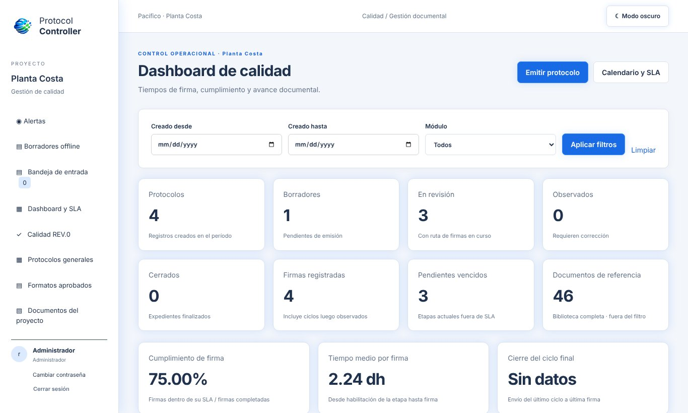
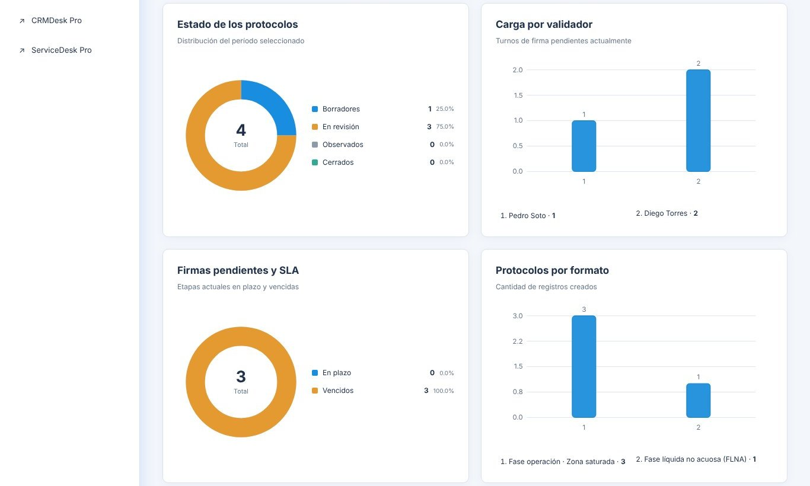
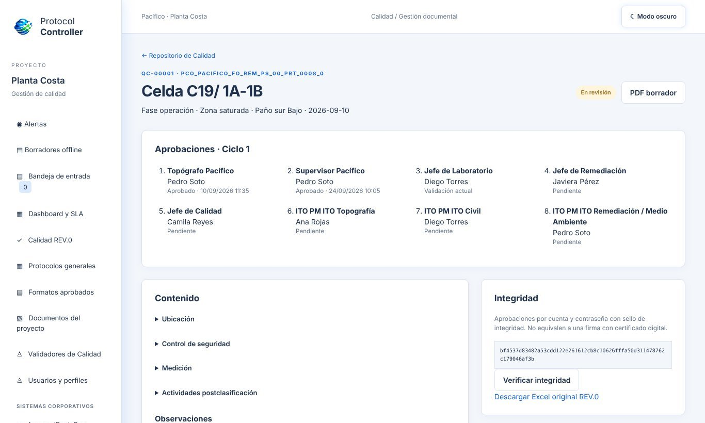
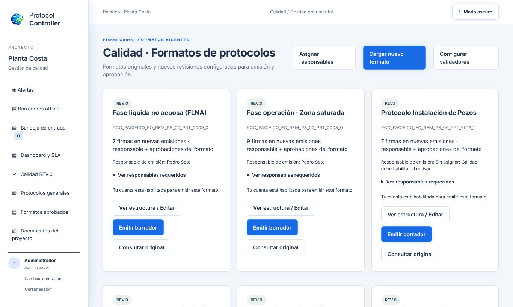
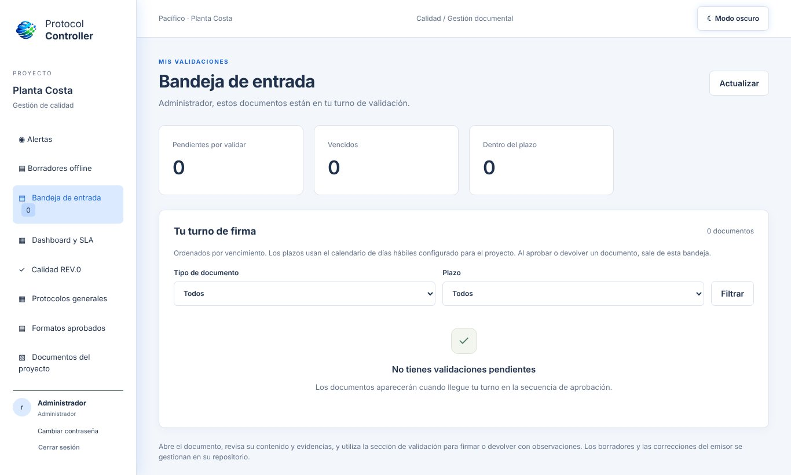
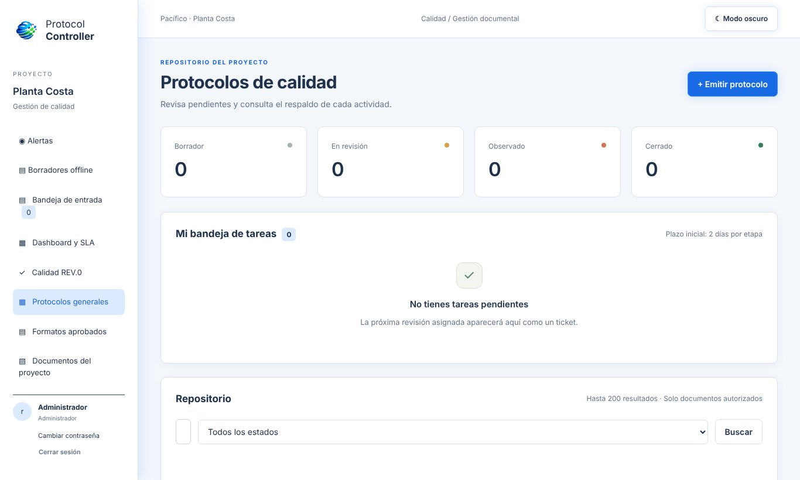
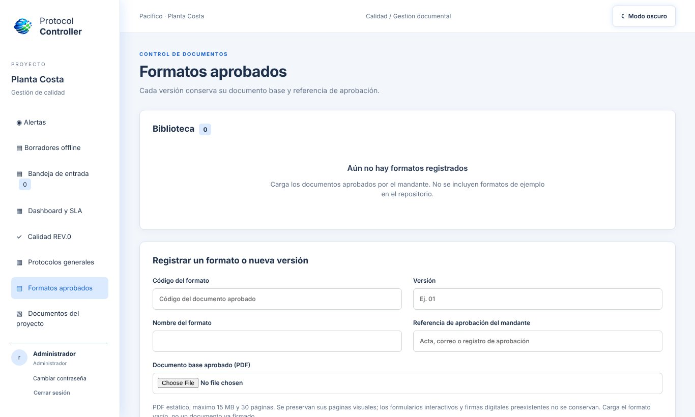
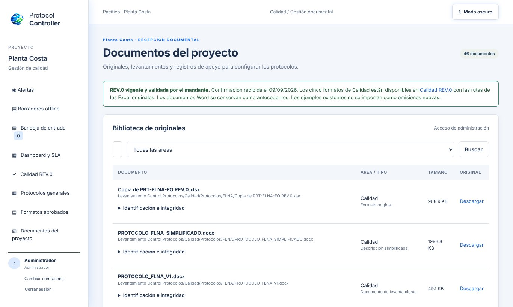
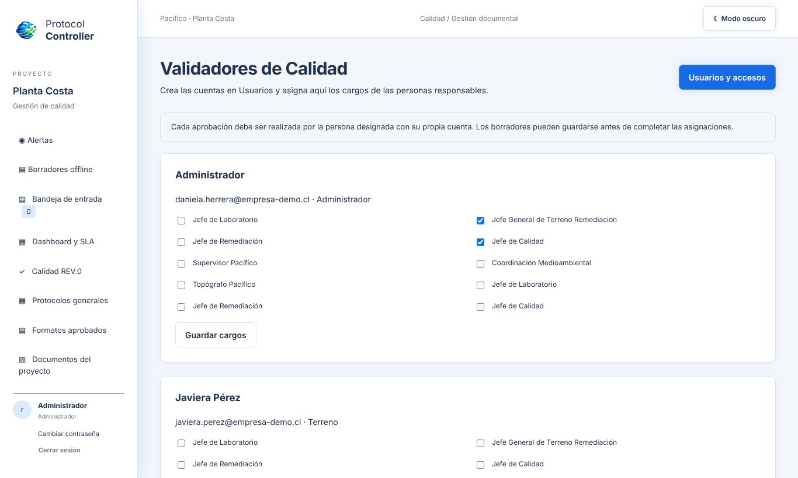
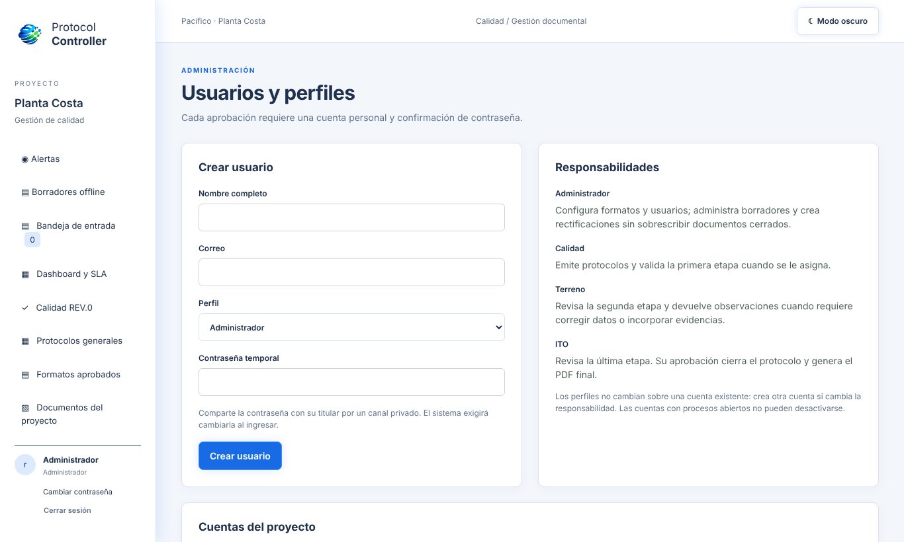
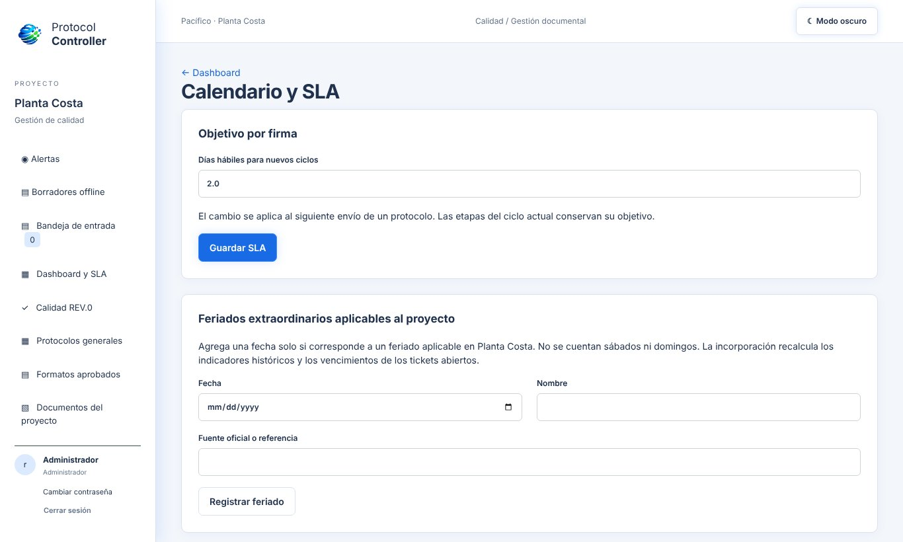
Registra los formatos aprobados por el mandante, sus campos y la ruta de responsables.
El emisor completa el protocolo en terreno, con fotos y sin conexión si es necesario.
Cada responsable firma en su turno o devuelve con observaciones, dentro de su SLA.
La última aprobación genera el PDF final con sello de integridad.
El dashboard mide cumplimiento de plazos, carga por validador y avance documental.
Web responsiva con modo tablet, borradores sin conexión y modo oscuro
Aprobación por cuenta y contraseña, historial completo y sello de integridad
SLA en días hábiles con feriados de Chile y feriados del proyecto
Perfiles por rol, política CSP estricta y contraseñas temporales
Planes desde 0,5 UF por usuario al mes. Escríbenos y coordinamos una demo con tus datos.